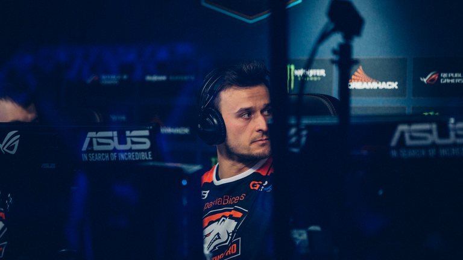

Profesjonalne zawody Counter-Strike obejmują profesjonalnych graczy rywalizujących w serii FPS , Counter-Strike . Oryginalna gra , wydany w 1999 roku, jest mod stworzony przez Minh „Gooseman” Le i Jess Cliffe z 1998 gier Half-Life , opublikowane przez zawór . Obecnie do gier, w które gra się konkurencyjnie, należą Counter-Strike (CS zwany również CS 1.6), Counter-Strike: Condition Zero (CS: CZ), Counter-Strike: Source (CS: S) iCounter-Strike: Global Offensive (CS: GO). Główne turnieje rozpoczęły się w 2001 r. Od pierwszej dużej wZimowych Mistrzostwach Cyberathlete Professional League wygranych przez Ninjas w piżamie .
Historia
Counter-Strike ma prawie 20-letnią historię konkurencji, zaczynając od oryginalnego Counter-Strike . Turnieje dla serii gier zostały gospodarzem od 2000 Pierwsze poważne gościła w Dallas , w Teksasie w Cyberathlete Professional League Winter Championship 2001 wygrał Ninjas in Pyjamas. Turniej oferował pulę nagród w wysokości 150 000 $.
W 2002 roku koreańskie World Cyber Games dołączyły do sceny konkurencyjnej Counter-Strike, a następnie w 2003 roku we Francji Electronic Sports World Cup. Turnieje te były dominującymi dyscyplinami Counter-Strike eSports do 2007 roku i charakteryzowały się silną rywalizacją między drużynami najwyższego poziomu. CPL zaprzestał działalności w 2008 roku. Kolejna liga, ESL, dodała Counter-Strike do swojej serii Intel Extreme Masters (IEM). Turnieje te trwały cztery lata. Ostatnią ważną aktualizacją Counter-Strike była aktualizacja 1.6 w 2003 roku, która stała się znana jako Counter-Strike 1.6 (CS 1.6).
Valve walczyła o iterację na CS 1.6 ze względu na wysoki pułap umiejętności i elegancką rozgrywkę. Wersja Counter-Strike Xbox miała ograniczony sukces w porównaniu z Halo i Call of Duty . Pierwszą oficjalną kontynuacją było Counter-Strike: Source wydane 1 listopada 2004 roku. Gra została skrytykowana przez społeczność rywalizującą, która uważała, że pułap umiejętności gry jest znacznie niższy niż w CS 1.6. Spowodowało to podział w społeczności konkurencyjnej co do tego, w którą grę grać.
W październiku 2015 r. Szereg profesjonalnych organizacji e-sportowych z drużynami Counter-Strike ogłosiło utworzenie związku zawodowego, który postawił szereg wymagań dotyczących uczestnictwa w turniejach w przyszłości. Ogłoszenie było publicznie opublikowanym e-mailem napisanym przez Natusa Vincere, dyrektora generalnego Alexandra Kokhanovsky'ego, który został wysłany do organizatorów ważnych wydarzeń e-sportowych. W skład zespołu wchodziły: Natus Vincere , Team Liquid , Counter Logic Gaming , Cloud9 , Virtus.pro , Team SoloMid , Fnatic , Ninja w piżamie , Titan i Team EnVyUs. Drużyny w tym związku nie będą uczestniczyć w turniejach Counter-Strike: Global Offensive z pulą nagród mniejszą niż 75 000 $. W 2016 r Świat eSports Association (WESA) została założona przez ESL i wiele zespołów, w tym eSports fnatic , Natus Vincere , zespołu EnVyUs i faze klanu , choć ta ostatnia, najbardziej w lewo zaraz po jej utworzeniu. W oświadczeniu WESA zapowiedziała, że „dalej profesjonalizuje eSport poprzez wprowadzenie elementów reprezentacji zawodników, ustandaryzowanych przepisów i podziału dochodów dla drużyn”. Oprócz tego planują pomóc fanom i organizatorom, „starając się stworzyć przewidywalne harmonogramy”.